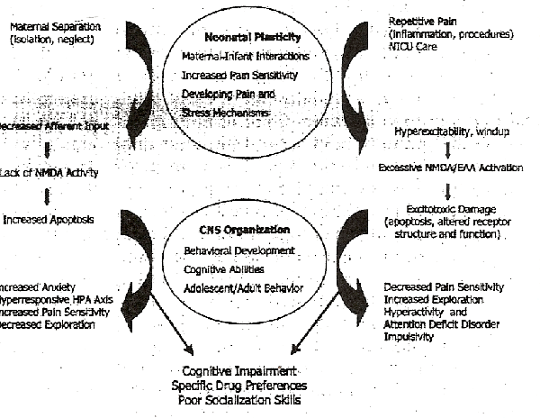
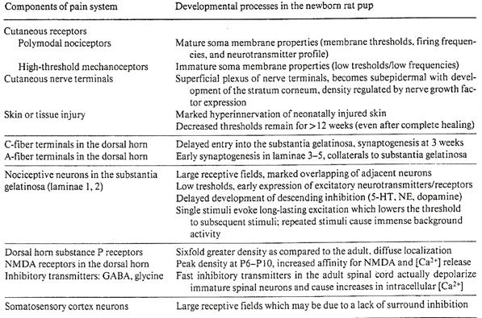
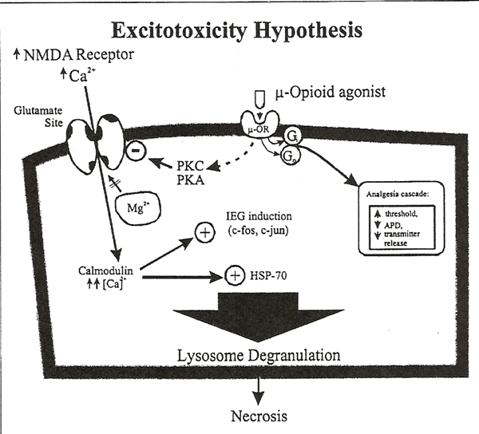
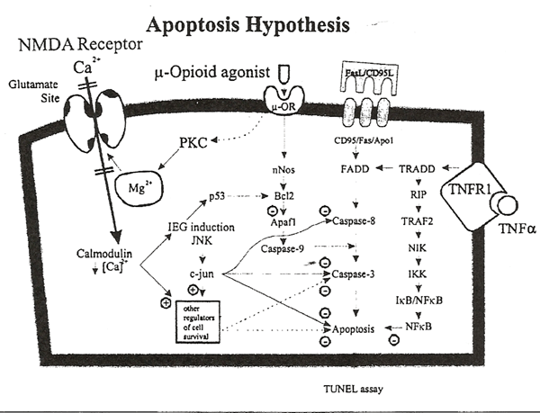

THE CIRCUMCISION REFERENCE LIBRARY
Department of Pediatrics, University of
Arkansas for Medical Sciences, and Pain Neurobiology
Laboratory,
Arkansas Children's Hospital Research
Institute, Little Rock, Ark., USA.
Keywords
Pain · N-Methyl-D-aspartate ·
Excitotoxicity · Apoptosis
Abstract
Self-destructive behavior in current society promotes a
search for psychobiological factors underlying this epidemic.
Perinatal brain plasticity increases the vulnerability to
early adverse experiences, thus leading to abnormal
development and behavior. Although several epidemiological
investigations have correlated perinatal and neonatal
complications with abnormal adult behavior, our understanding
of the underlying mechanisms remains rudimentary. Models of
early experience, such as repetitive pain, sepsis, or
maternal separation in rodents and other species have noted
multiple alterations in the adult brain, correlated with
specific behavioral phenotypes depending on the timing and
nature of the insult. The mechanisms mediating such changes
in the neonatal brain have remained largely unexplored. We
propose that lack of N-methyl-D-aspartate (NMDA) receptor
activity from maternal separation and sensory isolation leads
to increased apoptosis in multiple areas of the immature
brain. On the other hand, exposure to repetitive pain may
cause excessive NMDA/excitatory amino acid activation
resulting in excitotoxic damage to developing neurons. These
changes promote two distinct behavioral phenotypes
characterized by increased anxiety, altered pain sensitivity,
stress disorders, hyperactivity/attention deficit disorder,
leading to impaired social skills and patterns of
self-destructive behavior. The clinical important of these
mechanisms lies in the prevention of early insults, effective
treatment of neonatal pain and stress, and perhaps the
discovery of novel therapeutic approaches that limit neuronal
excitotoxicity or apoptosis. Copyright 2000 S. Karger
AG, Basel
[CIRP note: Apoptosis is defined by Stedman's Medical Dictionary (1995) as "simple deletion of scattered cells by fragmentation into membrane bound particles which are phagocytosed by other cells; believed to be due to programmed cell death."]
Aberrant behavior, mental illness, and drug abuse have reached epidemic proportions amongst adolescents and adults today. The high prevalence of such psychopathologies imposes a signficant burden of direct and indirect health care costs in developed countries [1, 2]. Self-destructive behaviors (e.g., suicide, drug abuse) are also associated with social disruption and the propagation of sexually transmitted diseases, leading to extensive societal and emotional consequences [3].
While the causes of such behavior are no doubt complex, adverse experiences around birth (many of which are preventable) may change the course of brain development and predispose individuals to abnormal behavior. Indeed several investigations have correlated perinatal and neonatal complications with these adult psychopathologies Abnormal conditions around birth have been associated with behavioral and emotional problems during childhood [4-8], major psychoses such as schizophrenia [9], anxiety or depression, suicides in adolescence [13] and adulthood [14, 15], altered responses to pain [16-18], or intractable pain states [19].
Much progress has been made in understanding the neurobiological basis for altered adult behavior resulting from experimental manipulations in the neonatal or perinatal period [20, 21]. These elegant studies have mainly focused on neuroanatomical, hormonal, and neurochemical alterations in the adult brain casued by models of early experience, such as repetitive pain, sepsis, or maternal separation. However, changes occurring in the neonatal brain as a result of these experimental manipulations have been largely unexplored. As a result, little is known about the pathogenesis or underlying mechanisms that lead to the neurobiological or behavioral changes noted in adult animals. We propose novel hypotheses that may help to investigate the mechanisms leading to long-term changes in adult rat behavior, resulting from modification in brain structure and function during the neonatal period.
Based on a cross-sectional case-control study comparing 412 suicide victims with 2,901 matched controls, Jacobson et al. [14] related adult self-destructive behavior with the traumatic experiences around the birth of these individuals. They suggested that imprinting at birth may predispose individuals to certain patterns of behavior that remain masked throughout most of adult life, but may be triggered during conditions of extreme stress [14]. In subsequent studies, these authors controlled for genetic, socioeconomic and demographic factors by using biological siblings as controls. For suicides committed by violent means (e.g., by using a firearm, jumping from a height or in front of a train, hanging and strangulation), the significant risk factors were those perinatal events that were likely to cause pain in the newborn [15]. A composite score derived from factors such as forceps or vacuum delivery, presentation other than vertex, resuscitation and other neonatal complications was significantly correlated with adult suicide in male infants. [15]. Multiple risk factors markedly increased the likelihood of the male off-spring subsequently committing violent suicide (relative risk [RR] confidence intervals [CI] 1.8-13.0). Maternal opioid therapy during delivery reduced the risk for subsequent suicides (RR 0.26, 95% CI 0.09-0.69), perhaps by making the infants less sensitive to the painful interventions at birth [15]. Another study [13] comparing 52 adolescents who committed suicide and 104 matched controls found that lack of antenatal care, chronic maternal disease during pregnancy, and neonatal respiratory compromise increased the risk for adolescent suicide (RR 3.42, 95% CI 1.87-5.30).
Interestingly, sedatives given in the absence of painful interventions were noted to increase the risk for subsequent drug abuse. Administration of multiple doses of opiates, barbiturates and nitrous oxide to mothers during delivery were found to increase the occurrence of subsequent opiate (RR 4.7, 95% CI 1.8-12.0, p = 0.002) or amphetamine (RR 5.6, 95% CI 1.6-16.9, p = 0.005) addiction in the offspring as compared to when no drug was given [22, 23]. Obstetric factors had greater influence on future drug addiction than socioeconomic factors [24,25] Neonatal hypoxia was not a significant risk factor in any of these studies [13-15, 22-25] suggesting that such long-term effects were not associated with extensive brain damage. Conversely, maternal smoking during pregnancy showed a dose-response relationship with persistent criminal behavior in male offspring, after controlling for demographic, parental, and perinatal risk factors [26].
Full-term neonates who experienced stressful deliveries also showed increased behavioral responses to heel lancing and increased cortisol responses to vaccination at 4-6 months age [27]. Gunnar et al. [28, 29] reported that infants born following obstetric complications showed altered responses to handling and an elevated adrenocortical response to a second heelstick performed 24 h later. Together these data suggest that prenatal or perinatal stress may enhance subsequent responses to stressful or painful events, and perhaps alter adult behavior.
Early clinical interventions in human neonates have multiple long-term effects [30,31] that can be briefly summarized here. Ex-premature infants often have more educational, behavioral and emotional difficulties during school age [32, 33] and adolescence [7,8,34] as compared to their ex-full term peers. There is not evidence relating these long-term outcomes to neonatal pain or stress, although such an association may be supported by preliminary findings from the clinical studies reviewed below.
|  Fig. 1. Schematic diagram of the effects of neonatal brain and maternal separation on brain plasticity in the neonatal and long-term effects on subsequent brain development and behavior. We propose that maternal separation and sensory isolation in the neonatal period may lead to decreased NMDA activity and increased apoptosis in multiple areas of the immature brain. These early changes will predispose individuals to develop a behavioral phenotype associated with anxiety and stress disorders during adult life. On the other hand, exposure to repetitive pain may cause execesive NMDA/EAA activation resulting in excitotoxic damage to developing neurons. These changes may promote a behavioral phenotype characterized by decreased pain sensitivity and hyperactivity during adult life. These two distinct behavioral phenotypes will resulted in impaired social/cognitive skills and specific patterns of self-destructive behavior. |
Multiple invasive procedures in premature infants cause marked fluctuations in intracranial pressure leading to early intraventricular hemorrhage or periventricular leukomalacia [30]. In preterm infants of 24-32 weeks gestation, the incidence of poor neurological outcomes (severe intraventricular hemorrhage, PVL, or neonatal death) were reduced by continuous infusions of low-dose morphine in a randomized clinical trial [35]. Nursing interventions that provide comfort/analgesia were correlated with a decreased incidence of severe IVH and improved neurological and cognitive function during later infancy [36]. Preterm neonates exposed to care in a neonatal intensive care unit for 4 weeks had increased physiological responses and diminished behavioral responses to heel lancing as compared to age-matched controls, and this pattern of responses was most strongly predicted by the number of painful procedures that the former group had received [37].
| Table 1. Mechanisms supporting increased pain sensitivity
in neonates.  Reproduced with permission from Porter et al.[31]. |
Grunau et al. [38] reported that 18-month-old ex-preterm neonates were less sensitive to pain as compared with ex-full term infants. The greater the number of procedures they had experienced as neonates, the less responsive they were to pain during infancy [38]. Altered behavior continued at older ages (4-5 years), with increased somatization in the ex-preterm infants [16], and greater affective responses to depicted medical pain at the age of 8-10 years [17]. Thus exposure to painful stimuli may alter the responses to subsequent stimuli, implying that the clinical benefits of optimal pain management may persist well beyond the duration of therapeutic effects.
Little is known about the effects of full-term pain in neonates. Circumcision seemed to disrupt their post-natal adaptation [39] and treatment of circumcision pain with a topical anesthetic decreased their responses to vaccination pain at 4-6 months of age [18]. From other experimental studies, it is now evident that very young infants can readily learn tasks and retain their responses over a period of several days [40]. Together, these studies provide evidence for classical associative learning in both newborn animals and humans, and promote the possibility that memories for pain may be recorded biologically [41], but are not accessible to conscious recall [40]
By themselves, the clinical correlations reviewed above are not sufficient to postulate the long-term effects of early experience. Corroborative data from animal experiments and mechanistic explanations of how abnormal sensory inputs in the neonatal period may lead to long-term changes in brain structure and behavior are necessary to substantiate these clinical observations. The following sections describe the impact of abnormal simulation in the newborn period within the context of maternal-infant interactions from human and animal experiments. We propose mechanistic hypotheses based on overstimulation or understimulation of newborns that may provide a plausible rationale for some of the clinical observations noted above.
Figure 1 outlines some normal processes that regulate early brain development and abnormal sensory experiences that can alter the cellular mechanisms, the organization of stress-responsive systems, and subsequent behavior. The mechanisms for these phenomena can only be examined within the framework of what now constitutes normal stimulation for the newborn infant (associated with factors such as maternal-infant interaction [42], neonatal painful stimulation [43], brain growth and plasticity).
Maternal-Infant Interaction
Studies of
newborn behavior have demonstrated a dynamic interactive
process of the neonatal with its mother and environment [44-46]. In this setting, both maternal and
infants behaviors play pivotal roles in producing
mother-infant bonding and providing optimal stimulation for
development of the neonate's brain. It was proposed that the
mother-infant relationship represents the prototype for
relationship with the self and all other social relationships
[47], thus highlighting its importance in
subsequent behavior.
Maternal-infant interactions were examined by Bowlby [48-50], who then proposed the general concepts of attachment theory. He described the response to maternal separation in two phases, a 'protest' phase representing highly activated attachment behavior, and a 'despair' phase to prepare the infant for passive survival through a combination of energy conservation and withdrawal from danger [48]. Hofer [42] discovered the maternal regulators of infant physiology and behavior, and classified them into three categories: (a) thermal-metabolic, (b) nutrient-interoceptive, and (c) behavioral-sensorimotor. These regulated the infant's activity level, sucking behavior, oxygen consumption, sleep-wake states, circadian rhythms, as well as hormonal, cardiovascular, immune and neuroendocrine responses. From this perspective, infantile responses to maternal separation were viewed as resulting from a single mechanisms, that is, a release from maternal regulation. [42].
Kuhn and Schanberg [51] noted that sensorimotor stimulation of the infant rat altered the regulation of growth hormone secretion, and Field [52] reported the beneficial effects of tactile-kinesthetic stimulation on weight gain and development of preterm neonates. Recently these principles have helped to formulate 'kangaroo care' (placement of preterm neonates between their mother's breasts), which may provide additional physiological and neurodevelopmental benefits in critically ill neonates [53, 54]. Several lines of evidence underscore the importance of maternal care-giving practices on neonatal physiology and brain development, with similar results reported in a variety of species [42]. The neonatal brain appears to be well equipped for the transmission and integration of all sensory stimuli (auditory, visual, and tactile) required for the developmental tasks in this time period.
The long-term effects of physical handling or other enrichment paradigms in neonatal animals further substantiate the importance of early childhood experiences. For example, Pieretti et al. [55] found that newborn mice removed from the dam for 10 min each day developed significantly higher latencies for the tail flick and hot plate tests at P25 and P45, and these effects were inhibited by naloxone pretreatment. The vast literature on the long-term effects of postnatal handling [21, 56-58] suggests highly specific effects on adult behavior and cognitive ability.
Behavioral and Cognitive Activity of
Human Newborns
Within hours
after birth, human infants show significantly increased
preferences for their mothers voice [59],
smell [60], and facial features [61] over those of a stranger. Term and
preterm neonates actively regulate their behavioral states to
maintain an optimum level of stimulation, and unstressed
infants can smoothly transition from one behavioral state to
another [62, 63]. Even very premature
neonates actively perceive, learn, and organize information
[64], while constantly striving to control
their sensory input [62, 65]. Preterm
infants will mount a coordinated response to a painful
stimulus [66, 67] associated with changes
in their arousal, behavior, and physiology [68, 69]. Als et al. [70]
have noted that preterm infants actively approach and favor
experiences that are developmentally supportive and actively
avoid experiences that are developmentally disruptive. These
behaviors support conservation of energy, sleep-wake cycles
and the achievement of developmental milestones. Improved
clinical and neuromaturational outcomes have resulted from
developmentally supportive nursing care [36,
71] and 'kangaroo care' in preterm infants [54].
Increased Sensitivity to Pain in
Neonates
The traditional view
that neonates were relatively insensitive to pain was refuted
more than a decade ago. [66, 72]. A
comparative study of human infants and rat pups reported that
withdrawal reflex thresholds increased during gestation and
with postnatal age, suggesting lower pain thresholds at
earlier developmental stages [73].
Multiple other studies have demonstrated that the intensity
and duration of pain responses were developmentally regulated
[74-77]. Teng and Abbott [75] found that thresholds for
formalin-induced pain increased 2.4-fold from 3 to 15 days of
age, and 11-fold from the newborn to the adult rat. Thermal
stimulation using withdrawal latencies to a hot plate [76] or tail flick [77]
also reported lower pain thresholds in the younger rats.
Mechanisms underlying increased pain sensitivity in neonatal
rat pups are summarized in table 1 and described elsewhere
[78-81]. The 2 weeks after birth in new
born rat pups and the last trimester of human gestation
represent critical windows for the organization of spinal
cord mechanisms [78, 79]. During these
critical periods, the supraspinal transmission of pain
impulses at is facilitated, whereas modification of these
impulses is rudimentary. [82-84].
For many years, cortical activity was not thought to be necessary for pain perception [85]. Studies using positron emission tomography challenged these concepts by showing activation of the anterior cingulate cortex, primary somatosensory cortex, and the prefrontal cortex [86, 87]. Multiple lines of structural and functional evidence now support the role of cortical mechanisms for pain perception in adult humans and animals [88]. Neonatal positron emission tomography scans also indentified somatosensory areas as the most active sites in the developing brain [89]. By 24-26 weeks of gestation, putative nociceptive fibers from the ventroposterior thalamus have fully penetrated the primary somatosensory cortex, providing the final anatomical link for the developing pain/tactile system [90]. Cellular organization of the somatosensory cortex and other supraspinal areas during early development is largely determined by the initiation of incoming afferent activity and activity-dependent changes in gene expression.
Mechanisms of Neonatal Brain
Plasticity
Parallel
experiments in the somatosensor and visual cortex suggest
that activity-dependent effects on gene expression underlie
the establishment of cortical maps during development [91]. Current data suggest complex
interactions between early neonatal experience and the gene
products controlling cellular and neurotransmitter
development, which may lead to apoptosis in development in
developing cortical neurons. For example, insulin-like growth
factors and their receptors were most abundant in the sensory
cortex, hippocampus, and cerebellum [92].
Trophic factors such as IGF-1 promote neuronal survival and
differentiation, whereas other trophic factors (such as BDNF,
NT4/5, NT-3, via TrkB receptors) chemotactically stimulated
the migration of embryonic neurons to their cortical targets
[93].
The neonatal period is characterized by peak rates of brain growth [94, 95] and cortical neurons are endowed with an exhuberant production of synaptic vesicles [96]. During the processes of migration and differentiation, large numbers of neurons undergo apoptosis or programmed cell death from diverse areas of the developing cortex. Using semiquantitative methods, Rabinowitz et al. [97] calculated that the number of neurons in the human cortex reaches a maximumat 28 weeks of gestation, then then declines by about 70% to achieve a stable number of neurons at birth. The lack of afferent inputs produced by the blockade of N-methyl-D-aspartate (NMDA) receptors in developing neurons markedly accentuated the occurrence of apoptosis in the neonatal rat brain with the maximun effects occurring in 7-day-old (P7) rates [98]. Thus NMDA activity in the neonatal rat brain may be required for cell survival and the factors that regulate apoptosis in the neonatal brain would play important roles in the final development of the somatosensory cortex.
The density of NMDA receptors increases postnatally reaching peak levels of expression in the neonatal brain [99, 100]. Whole-cell patch-clamp analysis showed NMDA-induced Ca2+ currents developing at P7 whereas AMPA/KA-induced currents were larger and developed earlier [101]. Depending on the cellular context, Ca2+ influx through voltage-sensitive Ca2+ channels increased cell survival, whereas Ca2+ influx via the MNDA receptors in postnatal neurons mediated excitotoxic cell death [102-104]. The peak susceptibility to MNDA-mediated excitotoxicity occurred between P7 and P15, from accentuation of its metabolic effects [105, 106] or reduction of the voltage-dependent Mg2+ block [107], potentially correlated with the expression of NMDA subunits in immature neurons [108]. Permanent alterations in the structure of NMDA receptors occurred following exposure to neonatal hypoxic stress, resulting in increased susceptibility to NMDA-induced toxicity thereafter [109, 110]. NMDA receptors play a central role in thte activity-dependent changes in dendritic length or spine density, synaptic stability, long-term potentiation (LTP) or depression, and other processes that mediate the heightened plasticicy of the neonatal brain. [82, 90, 111]
NMDA-dependent mechanisms are not only implicated in the spinal transmission of pain but also in the long-term effects of pain (such as hyperalgesia, allodynia, windup, and central sensitization [112]) leading to the pathogenesis of chronic pain states [113, 114]. Accumulating evidence suggests that exposure to repetitive neonatal pain may promote an increased susceptibility to chronic pain states mediated by NMDA-dependent neuroplasticity [19, 115]. Although intense research activity has focused on peripheral and spinal cord mechanisms that support these phenonema [114, 116], we believe that the significant role of NMDA-mediated neuroplasticity in supraspinal areas remains unexplored. The following findings suggest such a role.
Craig and Malenka [41] demonstrated that projections from the ventrobasal thalamus to layer IV neurons in the somatosensory (S1) cortex are organized by NMDA-dependent LTP. Induction of LTP occurred in P3-P7 rats but was absent in P8-P14 rates [41]. Further experiments showed that NMDA-mediated LTP is responsible for the learning and memory associated with classical fear conditioning [117, 118], and that early experiences can modify the capacity for learning in the adult [119]. It is particularly fascinating that the capacity for adult learning can be enhanced [119] or inhibited [120, 121] by neonatal experiences. Thus it is plausible that the underlying templates for subsequent cognitive ability and vulverability to psychiatric disorders may be formed as a result of abnormal neonatal stimulation [9, 14, 15].
Critical Periods of
Vulnerability
Critical periods of
vulnerability occur just before and after birth, when the
development of the underlying neoronal circuitry is more
susceptible to pertubation than at any other time of life.
Disruptive experiences at this time may have a greater impact
on subsequent neurobiological and behavioral development [42, 47]. There is increasing clinical
appreciation for the long-term, often permanent effects of
early sensory experiences on the patterns of subsequent
behavior [20].
A search for critical periods may be aided by the ontogenetic changes in pain threshold during early development. Falcon et al. [77] found that the nadir for thermal pain thresholds in infant rats occurred at P6 and similar age-related patterns were noted in thresholds for the cutaneous withdrawal reflex [73] and foot-shock responses [122]. When rat pups of different age groups (P4, P7, P14) were tested in different graded stimuli in our laboratory, the number of ultrasonic cries at P7 were significantly increased (ANOVA, F = 57.94, p < 0.0001). Pain behaviors occurred in response to saline injections (0.01%) at all ages tested (P4, P7, P14). Thus, sensitivity to painful stimulation may be maximal in rat pups at 6-9 days of age, a period that corresponds with the neurological maturity of full term infants at birth.
We postulate that a critical window of neonatal brain development occurs around the time of birth in human neonates and at 6-9 days in rat pups. This period also coincides with the peak rates of brain growth [95] and an exuberant production of synaptic sites [96]. At this time, the dorsal horn of the spinal cord and other supraspinal regions show a peak density of NMDA receptors [99, 100], decreased thresholds for NMDA- or kainate-induced seizures [123], an increased magnitude of Ca2+ currents from NMDA activity [107], and a greater susceptibility of brain cells to NMDO induced toxicity [102, 103, 124]. Neonatal brain cells have altered molecular mechanisms for Ca2+ signalling [102] which appear to determine neuronal survival, whereas blockade of NMDA receptors in this period causes widespread apoptosis [98].
Data related to normal brain development in the neonate reviewed above support the assertion that adverse sensory experience during the neonatal period may have widespread and far-ranging effects on subsequent developmental events. In the sections below, we examine the effects of overstimulation or understimulation in neonatal rat pups leading to permanent changes in adult behavior and cognitive ability.
Numerous animal experiments over the past 30 years have demonstrated the long-term effects of early experience on subsequent behavior [21, 125]. These data suggest that both excessive sensory stimulation and the lack of appropriate stimulation in neonatal rats may lead to permanent changes in adult rat behavior, altered hormonal or immune responses to subsequent stress, associated with altered expression of neurotransmitters, their receptors, and/or other cellular processes associated with repetitive neonatal pain and maternal separation, used repetively as representative models of over-or understimulation.
Longterm effects of pain in neonatal
rats
The long-term effects
of acute or repetive pain in neonatal rat pups have remained
largely unexplored. Reynolds and Fitzgerald [126] reported that skin wounds placed in
newborn rates (at P0, P7) caused a marked hyper-innervation
and decreased thresholds in the injured area lasting longer
than 3 months after the injury. Nerve sprouting from A and C
fibers was markedly increased around skin wounds place on the
day of birth (P0) as compared with older ages, and was
stimulated by nerve growth factor in older rats and unknown
neurotrophic factors in the neonate [127]. Neonatal rats subjected to
carrageenan-induced inflammation on P1 developed a persistent
expansion (by approximately 30%) in the receptive field of
the dorsal horn neurons [128], although
the mechanisms mediating these changes remain unknown.
Behavioral changes in rats following exposure to repetitive pain as neonates were first reported from our laboratory [129]. Rat pups subjected to four needle pricks each day from P0 to P7 showed greater preference for alcohol as adults, increased defensive withdrawal and hyper-vigilance behavior. Interestingly, these animals had diminished neuronal activity in the somatosensory cortex following hot-plate exposure as compared to the adult rats receiving tactile stimulation as neonates. These results were correlated with greater exploratory and escape behavior seen in the tactile group, whereas the experimental animal's behavior was more reflective of fear conditioning [129]. Further experiments showed that exposure to prolonged inflammatory pain (repetitive formalin injections in the neonatal period) was associated with decreased body weight, decreased pain sensitivity (hot plate tests), and decreased locomotor activity in the adult rat. Amongst the rats exposed to neonatal pain, adult females had increased alcohol preference and consumption as compared to males, consistent with our previous findings from repetitive acute pain [129]. These preliminary results suggest that neonatal pain leads to an increased expression (and/or coupling) of opiod receptors in adult rats [128], which is increased preference for sucrose [130, 131], decreased pain sensitivy, and the normalization of locomotor activity by concomitant morphine treatment in neonatal rats [132]. When morphine preceded the neonatal formalin injections, it was noted to reverse or ameliorate the long-term effects from exposure to neonatal inflammatory pain. Thus, the persistent behavioral changes from repetitive neonatal pain depend on the type of stimulation (needle prick vs. inflammation), age at the time of stimulation, concurrent treatment with opioids, and perhaps other unexplored factors. The neurobiological mechanisms underlying these changes are the focus of intense reseach activity.
Longterm Effects of Maternal
Separation
Prolonged maternal
separation leads to the development of exaggerated hormonal
responses and altered neurotransmitter release, which is
qualitatively different from the effects of postnatal
handling [133, 134]. Persistent effects
of maternal separation occurred only if the daily separation
paradigm exceeded 180 min [56], leading to
elevated baseline and stress-induced plasma corticosterone
levels, and reduced efficiency of glucocorticoid negative
feedback in adult rats [56, 135]. Repetive
maternal separation in neonatal rats was associated with
accentuated stress responses, increased vulnerabity to stress
and anxiety disorders, neophobia, early development of
diabetes, hypertension, cognitive defects, and shorter life
spans in adult rats [136, 137]. Adult
rats isolated as neonates for 1 h/day from P2 to P9 had
reduced susceptibility to an amphetamine challenge [138]. Enhanced amphetamine effects were
associated with elevated dopamine levels in the ventral
stratum, possibly linked to pertubations of the dopamine
receptor systems as a result of isolation [139]. Early isolation may contribute to the
sensitization of reward mechanisms in adult animals, from
changes in the dopaminergic mesolimbocortical pathways [140, 141].
Any links between the animal experimental data reviewed above and recent epidemiological data on the long-term effects of perinatal or neonatal complications are speculative at best. How do adverse neonatal experiences lead to long-term changes in behavior and brain function? For these relationships to be investigated rigorously, the potential mechanisms by which the experimental findings can be applied to explain such preliminary data must be understood. Answers to such questions will not only help to understand the mechanisms by which long-term effects are produced, but will also define the clinical importance of interventions that treat or reduce the impact of abnormal stimulation.
We propose two novel hypotheses that can be tested in the laboratory to explain the link between perinatal sensory experiences and adult behavior: (a) excessive neonatal stimulation resulting from perinatal trauma or other insults causes NMDA-mediated excitotoxicity in multiple areas of the developing brain, and (b) lack of appropriate sensory stimulation in the neonatal period serves to enhance the normal occurrence of developmental apoptosis in the neonatal brain.
Excitotoxicity Hypothesis
Prolonged pain
causes excessive activation of central afferent pain
pathways. This activation leads to release of glutamate and
other excitatory neurotransmitters from spinal and
supraspinal neurons. Binding of glutamate to metabatrophic
and NMDA receptors causes removal of the MG2+ block and
allows intracellular Ca2+ influx, ultimately leading to the
phosphorylation of second messengers and altered gene
regulation. NMDA-induced neuroplasticity is known to mediate
the wind-up and central sensitization of pain pathways [112-115]. It is evident that these phenomena
are accentuated and prolonged in the developing nervous
system [19, 101-107,
112-115], although the supraspinal
excitotoxic effects of pain-related NMDA activity have not
been investigated in immature animals.
|  Fig. 2. Schematic diagram for the mechanisms that mediate pain-induced excitotoxity in the neonatal brain. PKC = Protein kinase C; PKA = Protein kinase A; µ-OR = µ-opioid receptor; Gi/Go = inhibitory G-proteins; IEG = immediate early genes; APD = action potential duration; HSP-70 = heat shock protein-70. |
We hypothesize that repetitive neonatal pain causes excessive NMDA activation leading to excitotoxic damage in the brain regions noted above. Figure 2 illustrates the well-known phenomenon of NMDA-mediated excitotoxity [142]. Repetitive pain exacerbates excitotoxic damage, which may extend to adjacent neurons via nitric oxide and products of cell necrosis [112-115]. Structural and functional changes in the NMDA receptor may increase the neonates sensitivity to future excitotoxic insults. Furthermore, NMDA receptor-mediated intracellular changes [101-103] may lead to the development of hyperalgesic states by increasing the efficacy of NMDA receptor-activated Ca2+ channels. We predict that cumulative neuronal damage from repetitive pain during infancy results in abnormal behavior regulation during adolescence and adult life.
Apoptosis Hypothesis
The current
mechanisms of apoptosis and their interaction with NMDA and
opioid receptor systems is illustrated in figure 3. Apoptosis
or programmed cell death is mediated by the stimulation of
multiple cell surface receptors (e.g. death receptors DR1,
DR2, DR3, DR4, DR5) or by the internal activation of reactive
oxygen species, mitochondrial damage, or
Ca2+-calmodulin-dependent mechanisms. The most prominent
initiators of apoptosis include the binding of Fas ligand to
CD95 (Fas/Apo 1/DR1), release of cytochrome C from
mitochondria, or binding of tumor necrosis factor to its
receptor (TNFR1), which activate the initator caspase enzymes
(e.g., caspase-3, caspase-6, caspase-7) which, in essence,
rapidly dismantle the organelles and genetic machinery of the
cell. Caspase enzymes are differentially expressed in
different tissues, and caspase-3 serves as the main effector
enzyme in neurons. In situ hybridization histochemistry
revealed a profound developmental regulation of the caspase-3
transcript in rat brain, with relatively high levels of
caspase-3 mRNA observed in neurons of the fetal and neonatal
brain and low levels of mRNA in neurons of the adult brain
[143]. Spatial and temporal distributions
of apoptotic cells in developing rodents showed an inverse
correlation with Bcl-2 oncoprotein expression in visual,
sensory, and motor cortices but not in the frontal cortex or
hippocampus [144]. Expression of the
protein kinase C substrate, neurograni, also seems regulated
by afferent activity in areas associated with the
pain/tactile system [145].
|  Fig. 3. Schematic diagram for the apoptopic mechanisms mediated via lack of stimulation of NMDA receptors in the neonatal brain. See text for explanation. FasL = Fas ligand; FADD = Fas associated death domain; TRADD = TNF receptor-associated death domain; TNFα = tumor necrosis factor-α TNFR1 = TNF receptor-1; JNK = Jun NH2-kinase; TRAF2 = TNFR-associated death domain; RIP = receptor-interacting protein; NFkB = nuclear factor k-B; NIK = NFk B-inducing kinase; IKK = inhibitor of k-B; + = stimulates; - = inhibits. |
Ikonomidou et al. [98] reported recently that NMDA receptor blockade results in widespread activation of neuronal apoptosis in rat pups, and the peak effect occurred on P7. These data are consistent with previous reports suggesting that NMDA activation promotes the survival of developing neurons [104]. These recent findings led us to hypothesize that the adverse behavioral effects of isolation may be mediated by aberrant regulation of apoptosis in the neonatal brain. Lack of stimulation from the environment will reduce afferent activity and may interfere with the ontogenetic regulation of apoptosis, leading to long-term behavior changes. The anatomical distribution of apoptosis resulting from isolation may be different from that determined by NMDA blockade and has not been investigated.
The mechanisms of excitotoxicity and apoptosis described above must be explored to define whether abnormal stimulation around birth may predispose individuals to an number of neuropsychiatric and behavioral disorders. If the findings from epidemiological studies that have correlated early experiences and adult self-destructive behavior can be explained by patterns of increased excitotoxicity or apoptosis, novel therapeutic strategies can be developed [146]. The clinical importance of these mechanisms lies in the prevention of early insults, developing effective treatments for neonatal pain and stress, and the discovery of novel therapeutic approaches that limit neuronal excitotoxicity or apoptosis. It would also be important to identify and provide such early intervention for children or adolescents who have been exposed to such perinatal or neonatal conditions. [4-11]. For example, recent data suggest that environmental enrichment during development reduces spontaneous apoptotic cell death and protects against kainate-induced excitotoxicity [147].
The public health importance of abnormal stimulation during the neonatal period cannot be overemphasized. While programs for formulating appropriate health policies and public education campaigns must disseminate this message, it is also important for these effects to be investigated, particularly with a view to developing effective therapeutic strategies for the growing childen and adolescents who were exposed to abnormal conditions during the neonatal period.
Supported by grants from the National Institute of Child Health and Human Development (HD 36484), National Institute on Drug Abuse (DA 08240), and the Arkansas Children's Hospital Foundation.
http://www.cirp.org/library/pain/anand4/